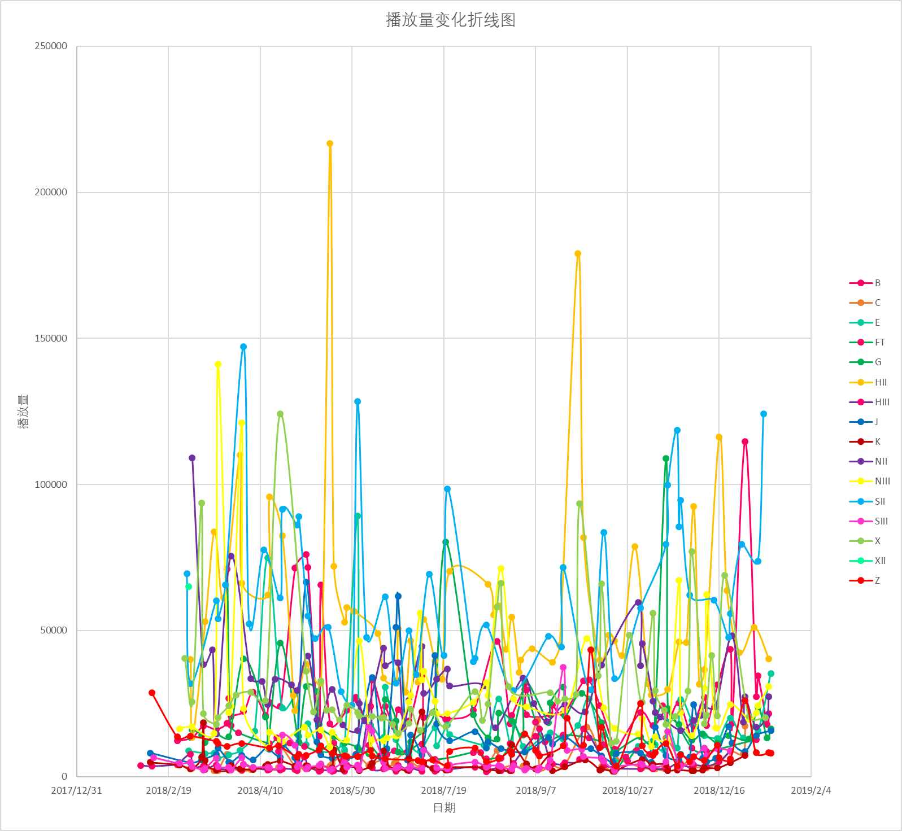

时段3：20180203-20190119

依靠元恩和叉兔的强力补血，银河战舰迅速起飞，隐隐有压过S成为流量第一的势头。
一曲人鱼之后，盛世崩塌后的恩队流量骤降，仅仅凭着瘦死的骆驼比马大，略压依然活力少女的X、依然在小盛世的恩穗、丸美段奶包加持下的B和双偶起飞的G。
FT高开低走，又因队内矛盾显得乱象重重。
SHY和CKG陷入马太效应，没有流量入口，在全团播放量都在起飞的时候稳为铁back，哪怕出了质量尚可的原创公演Idol.S都只能沦为时代的眼泪。
这是新媒体时代的北皇走上总选领奖台的一年，也是新媒体影响塞纳河生态的一年。
整体播放量的上升，是否彰示着屏幕党与剧场党比例的变化？